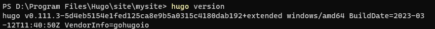

I have always want to have a personal website to show my personal CV and to record the technical documentations. Recently, hugo has been shown up. After one day of trying, a personal website has been built. The detailed steps are listed below.
Tools
- Hugo. To build the website locally.
- Github. To publish the website.
- SourceTree. To synchornize the local website to Github.
Plantform
Windows 11
Steps
Installing Hugo
Opt.1. Download hugo singal .exe file and add the path to system PATH environment variable. Detailed process can be find here. However, I strongly DO NOT recommend using this method, since it cuses many problems when using Hugo.
Opt. 2. Using wingets. Open windows prowshell, runing following command
winget install Hugo.Hugo.Extended
Verfying the installation
Open windows prowshell, run following command
hugo version
You should get following output:

Create a local hugo website
- Running command:
hugo new site yoursitename
Replacing the “yoursitename” with your own name
- Going to Hugo theme page choose a prefered theme
Opt.1 Download the theme and put it in the local theme folder
Opt.2 Using git to clone the them into the local theme floder
- In your download them folder, you may find a examplesite folder. In this folder you can find
config.toml, copy and replace this config file to your website root folder - In your root folder, run
hugo server
then you could preview your website in http://localhost:1313
- Going to ‘config.toml’ file, personlized your website.
Publishling your website
Github provides a github-pages allowing you to publish your website.
-
Creating a github repository with Owner’s username. If the onwer is ABC, then the repository should called
ABC.github.io -
Going to your local website root folder and running command:
hugo
your public folder should apper some documents, push these documents to your repository, then you can browse your website through ABC.github.io